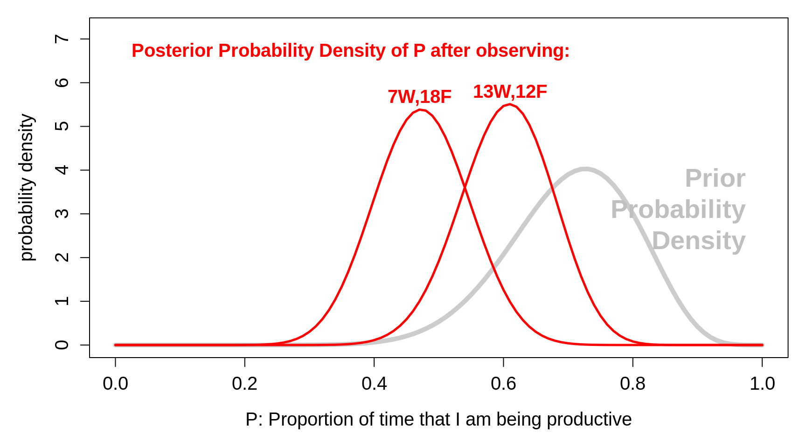

Chapter 14 Computing Session 1
The ‘computing’ objectives are to learn how to use R to put series of observations into vectors, and how to plot one series against another.
The ‘statistical’ objective of this exercise is to understand the concept of a distribution of a numerical characteristic (here an amount of elapsed time), and the various numbers describing its ‘central’ location and spread, and other ‘landmarks’. You will also be introduced (in the next section) to 2 functions that give a more complete description of a distribution.
14.1 Biological background
Later on we will examine climate trends using unusual datasets, which suggest that over the last few centuries, winter tends to end earlier, and plants tend to flower earlier.
One such dataset arose as part of a long-running contest, the Nenana Ice Classic More here
14.2 Statistical Task
You are asked to approximate and carefully examine the distribution of guesses in 2018, contained in the Book of Guesses for that year.
For now, we will measure the guesses (and eventually the actual time) as the numbers of days since the beginning of 2018. Thus a guess of Tuesday April 17 5:20 p.m. would be measured as 31 + 28 + 31 + 16 + (16 + 20/60)/24 = 106.6806 days since the beginning of 2018.
It would be tedious to try to apply optical character recognition (OCR) to each of the 1210 pages in order to be able to computerize all of the almost 242,000 guesses. Instead, you are asked to reconstruct the distribution of the guesses in two more economical ways:
By determining, for each of the 36 x 2 = 72 half-days days from April 10 to May 15 inclusive, the proportion, p, of guesses that are earlier than midnight on that date. [ In
R, if p = 39.6% of the guesses were below xy.z days, we would write this as pGuessDistribution(xy.z) = 0.396. Thus, if we were dealing with the location of a value in a Gaussian (‘normal’) distribution, we would writepnorm(q=110, mean = , sd = )] Once you have determined these 72 proportions (p’s), plot them on the vertical axis against the numbers of elapsed days since the beginning of the year on the horizontal axis. Thus the horizontal axis runs from 92 + 10 = 102 days to 92 + 30 + 15 = 137 days.By determining the 1st, 2nd, … , 98th, 99th percentiles. These are specific examples of ‘quantiles’, or q’s. The q-th quantile is the value (here the elapsed number of days since the beginning of 2018) such that a proportion q of all guesses are below this value, and 1-q are above it. [ In
R, if 40% of the guesses were below 110.2 days, we would write this as qGuessDistribution(p=0.4) = 110.2 days. Thus, if we were dealing with the 40th percentile of a Gaussian distribution with mean 130 and standard deviation 15, we would writeqnorm(p=0.4, mean = 130, sd = 15). ] Once you have determined them, plot the 99 p’s (on the vertical axis) against the 99 (elapsed) times on the horizontal axis.
14.2.1 The p and q functions: an orientation
The ‘p’ function tells us, for a given value of the characteristic, what proportion of the distribution lies to the left of this specified value.
The ‘q’ (or quantile) function tells us, for a given proportion p, what is the value of the characteristic such that that specified proportion p of the distribution lies to the left of this ‘q’ value.
In the plot below, the values of the p function are shown on the vertical axis, in red, against the (in this case, equally-spaced) values of the characteristic, shown on the horizontal axis. You enter on the horizontal axis, and exit with an answer on the vertical axis.
The q function (in blue) goes into the opposite direction. You enter at some proportion on the vertical axis, and exit with a value of the characteristic (a quantile) on the horizontal axis. In our plot, the proportions on the vertical axis are equally-spaced. Percentiles and quartiles are a very specific sets of quantiles: they are obtained by finding the values that divide the distribution into 100 or into 4.

14.2.2 Exercises
Once you have determined the 72 (cumulative) proportions (p’s) associated with the 72 half-days, plot them on the vertical axis against the numbers of elapsed days since the beginning of the year on the horizontal axis. Thus the horizontal axis runs from 92 + 10 = 102 days to 92 + 30 + 15 = 137 days.
The 1st, 2nd, … , 98th, 99th percentiles are not so easy to determine since you have to locate the 2419th, 4839th, 7258t, … entries in the 1201-page Book of Guesses and plot the 99 p’s (on the vertical axis) against the 99 (elapsed) times (q’s) on the horizontal axis. Instead, use the first entry on each of pages 11, 21, … in this excerpt. Using a different colour, plot these slightly-more-dense quantiles on the horizontal axix against the following percentages:
entries = 200*seq(10,1200,10) + 1
percent = 100 * entries/241929
noquote( paste(head(round(percent,1),10),collapse="%, ") )## [1] 0.8%, 1.7%, 2.5%, 3.3%, 4.1%, 5%, 5.8%, 6.6%, 7.4%, 8.3tail(round(percent,1),10)## [1] 91.8 92.6 93.4 94.2 95.1 95.9 96.7 97.5 98.4 99.2Compare the Q\(_{25}\), Q\(_{50}\), and Q\(_{75}\) obtained directly with the ones obtained by interpolation of the curve showing the results of the other method.
Compare the directly-obtained proportions of guesses that are before (the end of) April 20, April 30, and May 10 with the ones obtained by interpolation of the curve showing the results of the other method.
By successive subtractions, calculate the numbers of guesses in each 1/2 day bin, and make a histogram of them. From them, calculate the mean, the mode, and the standard deviation.
(For a future assignment, but you can start thinking about how) From a random sample of 100 guesses from the book, estimate how many guesses in the entire book are PM.
my.id = 800606
set.seed(my.id)
n = 50
sample.entry.numbers = sample(x = 1:241929, size=n)
sorted.sample.entry.numbers = sort(sample.entry.numbers)
head(sorted.sample.entry.numbers,10)## [1] 10542 17437 18351 21113 24086 28782 30055 32220 33162 36443page.number = ceiling(sorted.sample.entry.numbers/200)
within.page = sorted.sample.entry.numbers-200*(page.number-1)
column.number = ceiling(within.page/100)
row.number = within.page - 100*(column.number-1)
dataset = data.frame(page.number,column.number,row.number)
head(dataset)## page.number column.number row.number
## 1 53 2 42
## 2 88 1 37
## 3 92 2 51
## 4 106 2 13
## 5 121 1 86
## 6 144 2 82tail(dataset)## page.number column.number row.number
## 45 1087 1 80
## 46 1097 2 3
## 47 1121 1 16
## 48 1131 1 55
## 49 1175 2 52
## 50 1181 2 30How far off was the median guess in 2018 from the actual time? Answer in days, and (with reservations stated) as a percentage? {see the 2020 brochure }
Why did the experts at the country fair do so much better?
Where were the punters in 2019 with respect to the actual time?
Instead of measuring the guessed times from the beginning of the year, suppose that, as Fonseca et al did, we measure the guessed times from the spring equinox in Alaska, i.e. from 8:15 a.m. on Tuesday, March 20, 2018, Alaska time. In this scale, compute the mean guess, and the SD of the guesses.
Suppose, again, we measure the guessed times from the spring equinox, but in weeks. In this scale, compute the mean guess, and the SD of the guesses.
Some links on the ‘Wisdom of Crowds’
https://www.all-about-psychology.com/the-wisdom-of-crowds.html
http://galton.org/essays/1900-1911/galton-1907-vox-populi.pdf
- How much warmer/colder in Nov-April is Monreal than Nenana?
14.3 SUMMARY
14.3.1 Computing
Assigning values to objects via
<-or=Putting numbers into vectors via concatenation
c( , , )Putting a sequence of values into vectors via the
seq()functionLooking at the first
nand the lastnelements of an object viahead(object,n)andtail(object)– if you omit then, it defaults to 6Making a new numerical value or vector of numerical values from existing ones via, e.g. via
+,*( multiplication),^ poweretc.Using
str(object)to see the **str*ucture of an objectUsing
plot(x,y)to plot an ‘x’ vector versus a ‘y’ vector.lines(),points()andtext()` can be added to an existing plot.Consider a Gaussian distribution with a specified mean.value and standard deviation sd.value. Then the proportion of the distrution to that lies ot the left of a specified value
qis given by the inbuiltRfunctionpnorm(q, mean = mean.value, sd = sd.value). For example, if in a certain population IQ has a Gaussian distribution with a mean of 100, and a sd of 15, then using thisRexpressionround( 100*pnorm(110, mean = 100, sd = 15) , 1 )we can determine that 74.8 percent of the distribution would be below 110, and thus that 25.2 percent would be below 90. The middle 50% could be calculated using this expressionround( 100*qnorm(c(1/4,3/4), mean = 100, sd = 15) , 1 )to give 89.9, 110.1
14.3.2 Statistical Concepts and Principles
- Definition of the p
\[ Var[Y] = \sigma^2 = \textrm{mean of } (Y - \mu)^2 \ ; \ \ \ SD[Y] = \sigma.\]
- Definition of the p
\[ Var[ Y_1 + Y_2 + \dots + Y_n] = \sigma^2 + \sigma^2 + \dots + \sigma^2 = n \times \sigma^2.\] \[ SD[ Y_1 + Y_2 + \dots + Y_n] = \sqrt{n} \times \sigma.\]
the
approx()function for fittingThe SHAPES of distributions – no universal rule (log normal)
Using the bulit-in functions
pnorm()andqnorm